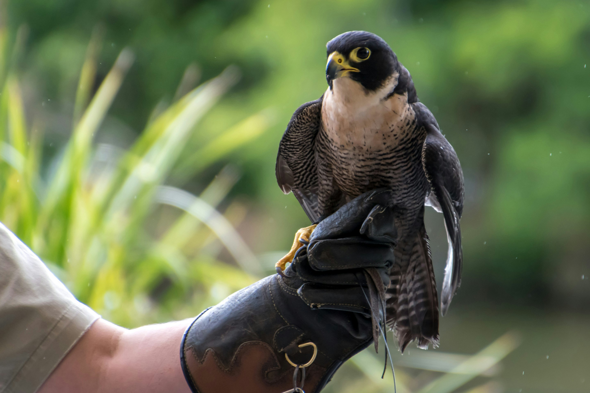
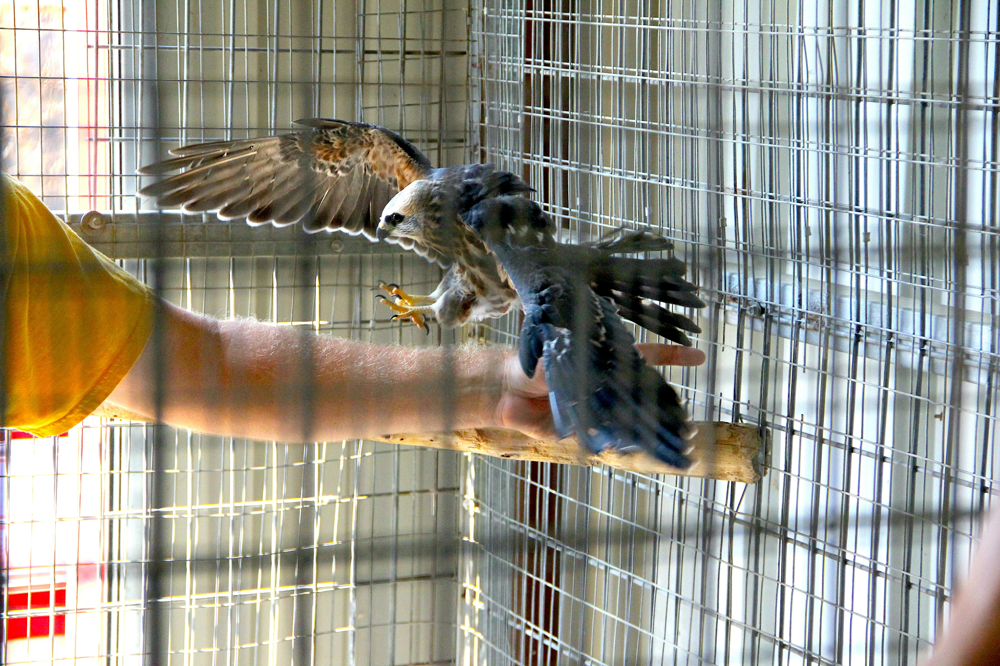

Falconry is not just a sport but a lifestyle. It is a hunting method several thousands of years old, training raptors to find, kill, and retrieve prey. It takes two years just to graduate from an Apprentice Falconer to a General Falconer, and seven years to become a Master Falconer, and that is at minimum. It takes a large amount of time to take care of each bird every single day, every day of the year, and you still have to maintain the rest of your life while making time for this bird. A raptor in training takes even more time out of your day. If a person jumps into falconry without serious consideration, they can harm several raptors and discredit falconry as a whole. There is also money to consider, since veterinary fees, food, equipment, studying materials, permit and licensing fees, shelter, and thousands of miles of traveling will cost a massive amount of money. The raptor will need large, open expanses of field, without roads, power lines, barbed wire, any urbanization, or other hunters, as well as permission from the owner of the land to hunt there. You also need to be emotionally prepared for hunting. And after all that time, energy, and money spent, you do have to keep in mind that at any moment, your raptor can simply fly away and leave you.
I have been interested in falconry since I was incredibly young. I don't even know how old I was, but I saw a falconer on TV and was completely captivated by the knowledge that there were people out there who lived with raptors. Last year, I realized that becoming a falconer was an entirely possible future for me, and I have since been researching falconry and everything that is required of it. I am hoping that when I go to college, I am able to find a General Falconer to apprentice under. I hope to also start a club at that college, so that we can do events and such for the college, and bring our raptors with us to show people. Through that club, we could also get a lot more people taught and trained in falconry, and even more educated about it and what it takes.
An Apprentice Falconer must be studying under a General or Master Falconer and must be at least 14 years old. To become an Apprentice Falconer, you must pass the Falconry Examination, pass a facility inspection, and have a current hunting license. You must also fill out and submit the Falconry License Application and required documents.
A General Falconer must be 18 years old and have trained and hunted with a raptor for at least 4 months for each of the two years as an Apprentice Falconer. You must write a summary detailing your experience with the raptors, including what species and for how long you had each bird. You must also submit written approval and recommendation from your teacher and another General or Master Falconer who has evaluated you in the field. General Falconers may not sponsor more than 3 Apprentice Falconers at once, and General Falconers can not sponsor an Apprentice Falconer unless the General Falconer has been a General Falconer for at least 2 years.
To become a Master Falconer, you must be 18 or older, been a General Falconer for 5 years, and trained and hunted with a raptor for at least 3 of the 5 years as a General Falconer. You must once again write a detailed summary about your time and experience with each raptor. You must also submit written approval from 3 Master Falconers who have evaluated you in the field, as well as approval from the New York State Falconry Advisory Board. You may not sponsor more than 3 Apprentice Falconers at a time.
Apprentice Falconers may only have 1 raptor at a time, and may only obtain 1 replacement raptor per year, neither of which may be nestling raptors. Apprentice falconers are allowed to have either a Red-Tailed Hawk, or an American Kestrel.
General Falconers may have up to 3 raptors and may obtain 2 replacement raptors per year. These raptors can be captured nestlings. General Falconers may not possess any kind of eagle.
Master Falconers can have up to 13 raptors at any time, and may obtain only five raptors from the wild in a year, but may obtain any number of captive bred raptors. Master Falconers may obtain nestling raptors. Master Falconers may obtain up to White-Tailed Eagles or Stellar's Sea Eagles after submitting a written account of their experience in handling large raptors to the DEC along with 2 letters of recomendation from individuals experienced in handling large raptors, and then recieving approval from the Falconry Advisory Board.
